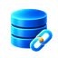

Add your database.
Sign in, select Add database, and enter your connection details or paste a MySQL connection URL.
Host & databaseRead-only credentialsConnection check

DATABASE CONNECTOR
By Nektron, Inc.
Ask ChatGPT about your data. It discovers your tables, writes its own read-only SQL, and follows the answers wherever your next question leads.
Private release available · Public launch in preparation
Which products brought in the most revenue this month?
Here are the top products by revenue.
| Product | Orders | Revenue |
|---|---|---|
| Studio Desk | 128 | $38,400 |
| Arc Lamp | 204 | $24,480 |
| Oak Shelf | 96 | $17,280 |
Explore your own questions, then refine them with follow-ups.
Restricted access and query controls keep SQL read-only.
Enter them in secure setup, outside your ChatGPT conversation.
A SMALL SETUP. ROOM TO EXPLORE.
From an unfamiliar schema to a useful answer, without preparing a report for every question.
Sign in, select Add database, and enter your connection details or paste a MySQL connection URL.
Choose Database Connector in ChatGPT. Ask about a trend, find a record, or explore how your tables relate.
“What changed in our order volume this week?”
ChatGPT inspects your authorized schema before writing SQL.
Ask for a breakdown, compare another period, or follow a returned identifier into related records.
“Now break that down by region.”
Results include limits and source context so you can judge the answer.
USEFUL ACCESS. CLEAR BOUNDARIES.
Access follows the database account you authorize. You stay in control of what the connector can reach.
A restricted database account, SQL validation, and read-only transactions work together. The connector does not update your records.
Connection credentials are stored encrypted and are not returned to ChatGPT. Authorized query results are shared with ChatGPT to answer your questions.
Time, concurrency, row, and response limits keep requests controlled. Truncated results and unknown coverage are identified.
Verified TLS is required. The connector does not open database firewalls; private networks may need administrator setup.
The architecture leaves room for additional engines. PostgreSQL, Oracle, and other versions are not available yet.
Discuss your databaseONE CONNECTION IS A GOOD START.
Start with one database for free. Pro brings up to five database connections into the same account.
$0 / month
One saved database connection.
$12 USD / month
Up to five saved database connections total.
Launch pricing. Public subscriptions are not open yet. Query limits apply to both plans. Applicable taxes, if any, are shown before payment.
YOUR NEKTRON ACCOUNT
Sign in on Nektron’s website to manage your databases and plan. Pro checkout, payment methods, and cancellation use Stripe’s hosted pages.
Account sign-in and billing will open with the public release.
Already testing the private connector? Your current connection is unaffected.
Your plan and databases
Need help? info@nektron.ai
Your MySQL host, database name, username, and password—or a connection URL. Use a dedicated read-only account with direct table permissions and verified TLS. Network access must already be available or arranged by your administrator.
The database tools execute read-only SQL and reject write statements. The service does maintain connection settings, operational audit metadata, and temporary concurrency records outside your database.
On this Nektron product page after you sign in. Payments and subscription management open Stripe’s hosted pages. The ChatGPT connector uses the access included in your existing account.
Your first saved database remains available under Free. Additional saved configurations are retained but unavailable until your account is entitled again. Customer database records are not deleted.
MySQL 8.4.5 is the first qualified engine. The private connector has been verified in ChatGPT on the web. Public listing and iPhone availability are still being prepared and tested; other database engines are not available yet.
Check the returned records, result limits, and source context. Separate queries are separate snapshots, and AI interpretations can be wrong. Verify important conclusions against your source data.
LESS DISTANCE BETWEEN YOU AND YOUR DATA.